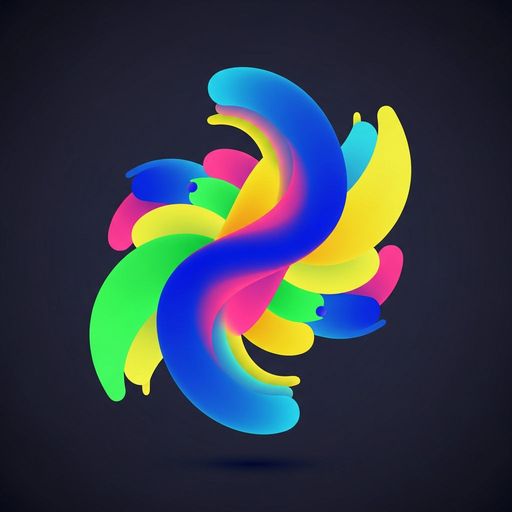

RECUPERANDO EL PASADO CON FUTURO

El tiempo es implacable con los recuerdos físicos, pero la tecnología en manos de expertos es su salvación definitiva. En DGE, consideramos la Restauración Maestra no solo como un servicio técnico, sino como un acto de preservación histórica. Rescatamos esas fotografías que el sol, la humedad o el descuido intentaron borrar, devolviéndoles la nitidez, el contraste y la vida que tenían el día exacto en que fueron capturadas.
Combinamos la precisión milimétrica del retoque manual con la potencia asombrosa de la Inteligencia Artificial Generativa. Esto nos permite no solo "limpiar" una mancha, sino reconstruir partes faltantes de un rostro, estabilizar el grano de la película antigua y reescalar imágenes pequeñas a formatos de alta definición (4K). Tus antepasados y tus momentos más preciados merecen ser vistos con la claridad del presente, manteniendo siempre la esencia y el sentimiento de la época original.
Eliminamos grietas, moho, manchas de agua y rasgaduras físicas mediante un proceso de clonación y texturizado que respeta la pátina original de la fotografía.
Mediante algoritmos de aprendizaje profundo y supervisión artística, aplicamos color a fotos en blanco y negro con una naturalidad que te hará dudar si la foto fue tomada originalmente a color.
Si una parte del rostro se ha perdido por el deterioro, nuestra IA entrenada en rasgos humanos reconstruye la fisonomía basándose en el contexto, devolviendo la mirada y la sonrisa original.
Transformamos fotos borrosas o desenfocadas en imágenes nítidas. El proceso de "Super-Resolution" permite imprimir tus recuerdos en formatos grandes sin ver un solo píxel.
Capturamos tu fotografía con escaneo profesional de alta resolución para obtener cada detalle oculto en la emulsión del papel.
Identificamos las áreas críticas que requieren reconstrucción y definimos la paleta de colores adecuada para la época.
Pasamos horas aplicando técnicas de pintura digital y procesos de IA para "curar" la imagen, píxel por píxel.
Te entregamos el archivo digital restaurado y, si lo deseas, coordinamos la impresión en papel fotográfico de calidad museo.
Eliminación total de grietas, manchas de humedad, moho y rasguños que oscurecen la imagen original.
Devolvemos el color a las fotos en blanco y negro con una precisión histórica y tonos naturales asombrosos.
Aumentamos el tamaño de fotos pequeñas o de baja calidad sin perder nitidez, ideales para impresiones grandes.
Técnicas avanzadas para recuperar rostros y texturas de piel en áreas donde la imagen original se ha perdido.
El costo incluye la restauración completa de una fotografía, colorización y entrega en formato digital de alta resolución.
¡Rescatar mi Historia!